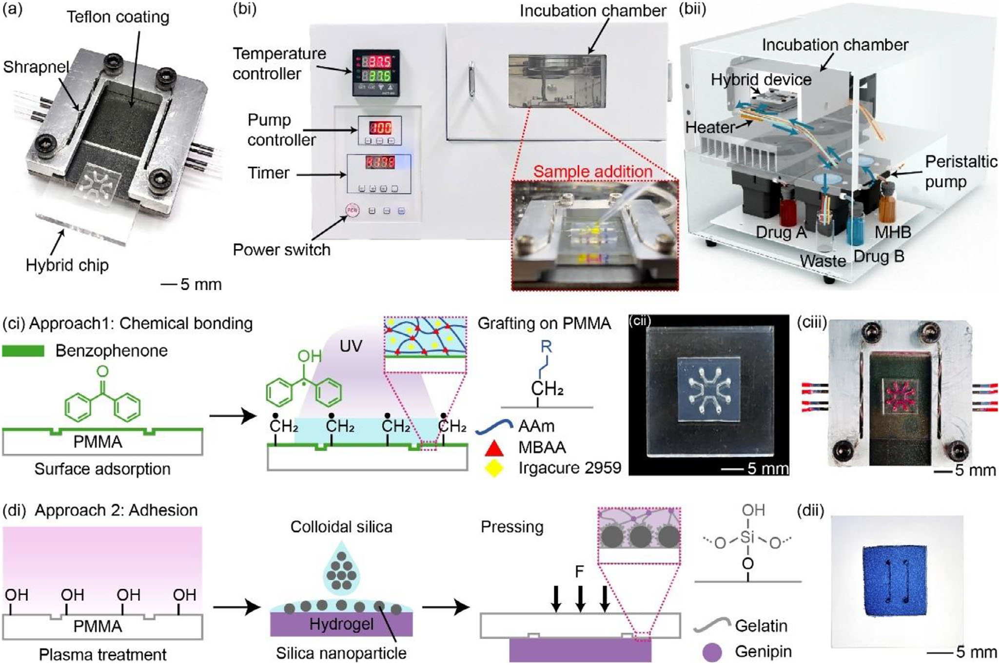
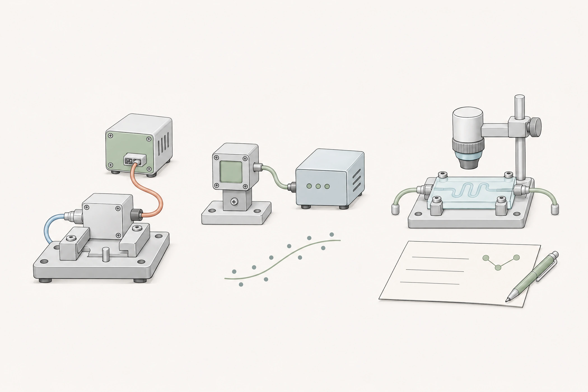
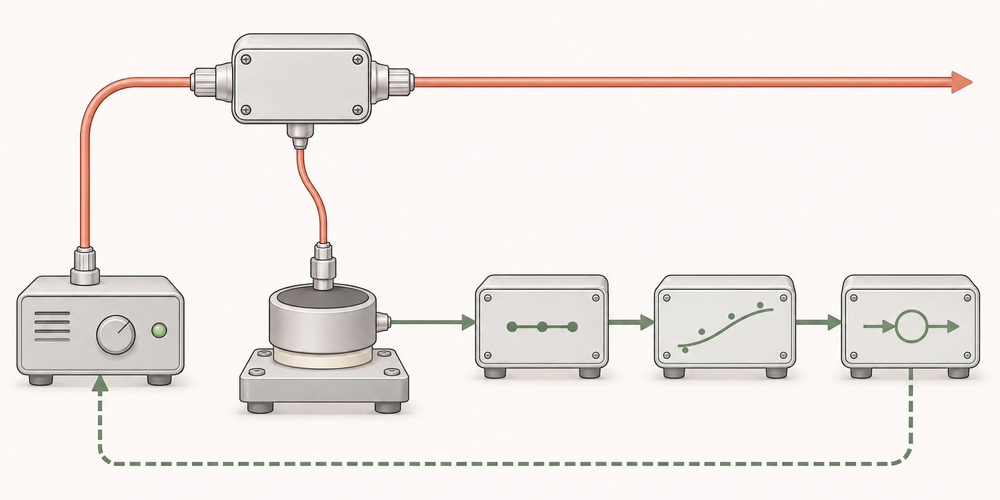
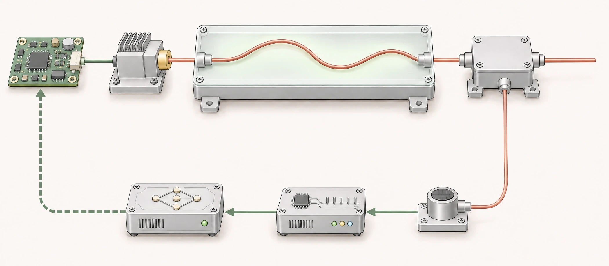

论文图 1 / Siu et al. · Small · 2026 · CC BY 4.0ENGINEERING / FOCUS VIEW
01 / 03
系统集成与整机验证
工程概念图 · 接口、测量与验证- 跨模块接口
- 测量与建模
- 整机联调验证
ENGINEERING IN DETAIL
系统链路与研发工作
选择项目，查看功能关系、承担工作与验证结果。
光学取样 → 热电堆 → 数字信号 / ADC → 功率模型 → 功率闭环
查看医疗激光功率监测与闭环项目 ↗PROJECT EXPERIENCE
代表项目
系统研发方向 / 按相关度排序

工程概念图 · 功率取样与反馈
工程概念图 · 铥激光器光机电集成 光学概念图 · 光纤耦合
光学概念图 · 光纤耦合
 信号处理概念图 · EMG 采集与滑动 RMS
信号处理概念图 · EMG 采集与滑动 RMS
尿动力仪 / EMG 信号处理
尿动力仪 EMG 采集链与滑动 RMS 算法
梳理电极、模拟前端、整流、ADC 与软件处理链，实现滑动 RMS 活动包络，修正 ADC 时钟与共享状态访问，与硬件工程师完成采集链联调。
查看项目EXPERIENCE
工作经历
广州市普东医疗设备股份有限公司
系统工程师 · 医疗激光功率监测、激光器研发与光机电集成、尿动力仪信号处理及研发交付。
清华珠三角研究院
技术员 · 微流控设备研发、程控显微平台集成与图像分析。
深圳必显必达生物科技有限公司
产品工程师 · 兽用超声设备部件评测、生产问题跟进与中英文技术支持。
RESEARCH & TOOLS
研究成果与工程工具
论文 / Small 22(11) / 2026
水凝胶芯片标准化卡匣
Transforming Fragile Hydrogel Chips Into Standardized Cartridges via Contact Line Pinning for Robust Microfluidics. Small 2026, 22(11), e06075.
Small 是 Wiley 旗下材料、纳米与生命科学交叉期刊。论文通过接触线钉扎，将脆弱水凝胶芯片转为可重复连接的标准化卡匣。
承担外围培养设备、标准化卡托与显微成像联动研发，独立实现图像预处理、自动对焦与 MIC 边界搜索程序。
DOI: 10.1002/smll.202506075美国专利申请
微流控芯片与非接触互连
Microfluidic Chip, Biomaterial-Plastic Composite Device Using the Same, and Non-Contact Interconnection Method Between Microfluidic Chip and Connector.
涵盖水凝胶微流控芯片、生物材料—塑料复合器件，以及芯片与连接器之间的非接触互连。
查看专利信息研发支持工具
医疗器械合规辅助 skill
自建研发辅助工具，组织法规来源、项目事实、追溯字段和模板检查，支持资料梳理与一致性检查。
CONTACT
冯朗成
医疗与生命科学设备研发